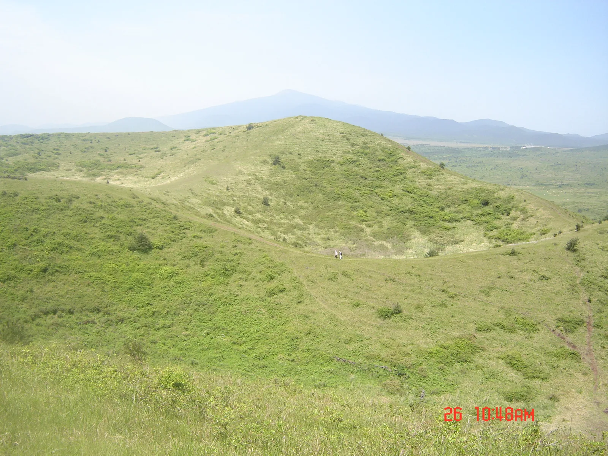
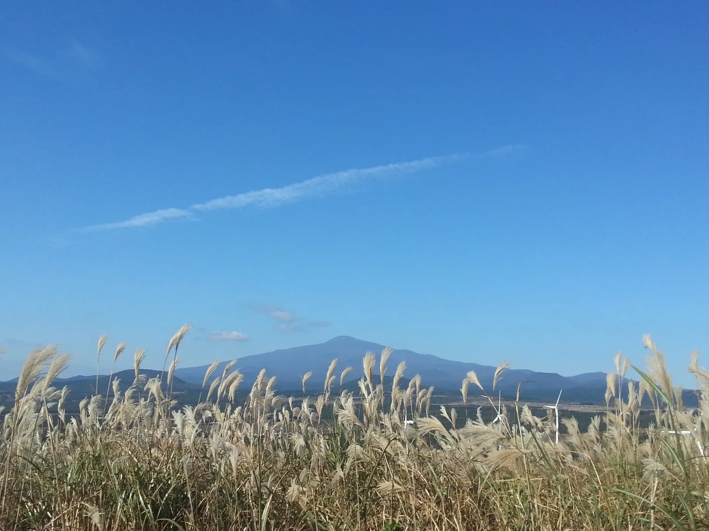
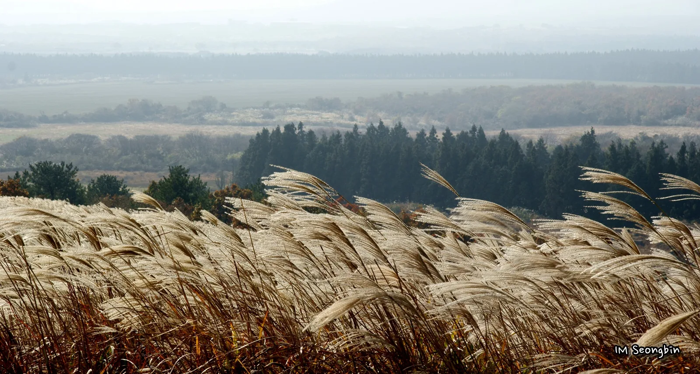

▲ 해질 무렵의 따라비오름 능선. 능선 전체를 뒤덮은 억새가 노을빛에 물든다 사진=한국관광공사
1. 따라비오름, 어디에 있나
따라비오름은 제주특별자치도 서귀포시 표선면 가시리 산62번지 일대에 있는 오름이다. 해발고도 342m, 자체 높이(비고) 107m, 둘레 2,633m 규모로, 원형분화구 안에 3개의 작은 화구가 겹쳐 있고 6개의 봉우리가 능선을 이루는 것이 특징이다. 입장료와 주차 모두 무료다. 다만 오름 입구까지 이어지는 길이 1차선 농로에 가깝고, 정식 대형 주차장이 따로 갖춰져 있지 않아 성수기 주말에는 갓길에 차를 대는 경우가 많다. 오름 옆을 지나는 녹산로는 도로변 주차가 금지돼 있어, 인근 가시리 조랑말체험공원(서귀포시 표선면 가시리 산41-8) 주차장에 차를 세우고 걸어오는 방문객도 많다. 주소가 산지번이라 내비게이션에 정확히 잡히지 않을 수 있어, '따라비오름 주차장' 또는 '가시리 조랑말체험공원'으로 검색하는 편이 안전하다. 제주국제공항에서는 렌터카로 약 50~60분 거리다.

▲ 따라비오름은 원형분화구 안에 3개의 작은 화구를 품고 있어, 능선을 걸을수록 지형이 겹겹이 드러난다(사진은 억새철이 아닌 계절에 촬영) 사진=Wikimedia Commons (GROOT in jeju, CC BY-SA 4.0)
2. 왜 '오름의 여왕'이라 불릴까 — 억새와 조망
따라비오름이 제주 368개 오름 중에서도 손꼽히는 억새 명소로 꼽히는 이유는 능선의 굴곡과 억새의 결합에 있다. 3개의 굼부리가 만든 높낮이가 있는 능선을 따라 제주 토종 억새가 군락을 이루는데, 10월 하순부터 11월까지 바람이 불 때마다 은빛 물결이 능선 전체를 훑고 지나간다. 정상부에 오르면 북쪽의 새끼오름, 동쪽의 모지오름·장자오름, 남서쪽의 병곳오름 등 주변 오름군이 사방으로 펼쳐지고, 맑은 날에는 한라산까지 시야에 들어온다. 정상까지는 완만한 경사로 약 20~30분이면 오를 수 있어 남녀노소 부담 없이 찾는 코스로 알려져 있다.

▲ 따라비오름 능선에서 억새 너머로 바라본 한라산(사진은 봄철에 촬영됐으나, 겨우내 마른 채 남은 억새 사이로 비슷한 조망을 확인할 수 있다) 사진=Wikimedia Commons (GROOT in jeju, CC BY-SA 4.0)
이름의 유래에 대해서는 여러 설이 있다. 인근 모지오름과 나란히 자리해 마치 '지아비·지어미가 서로 따르는 모양'이라는 데서 왔다는 설과, 고구려어에서 '높은 산'을 뜻하는 '달(達)'에서 파생됐다는 설이 함께 전해진다.
3. 탐방로와 준비물
주차 공간에서 오름 입구까지는 바로 이어지며, 등산로는 크게 두 갈래다. 정상으로 바로 오르는 길은 계단 구간이 있어 약 20~25분, 경사가 완만한 굼부리 둘레길을 따라 도는 코스는 왕복 1시간~1시간 30분 정도 걸린다. 오름 정상부와 능선에는 그늘이 거의 없고 화장실도 없으므로, 방문 전 미리 다녀오는 것이 좋다. 가을이라도 능선에서는 바람이 세게 부는 경우가 많아 바람막이를 챙기면 도움이 된다.
| 구분 | 내용 |
|---|---|
| 주소 | 서귀포시 표선면 가시리 산62번지 일대 |
| 입장료·주차 | 무료(전용 대형 주차장 없음, 진입로 1차선) |
| 정상 등반 | 약 20~30분(계단 구간 포함) |
| 둘레길 일주 | 왕복 약 1시간~1시간 30분 |
| 편의시설 | 화장실·그늘 없음, 반려동물 동반 가능(리드줄 필수) |
| 억새 절정기 | 10월~11월 |
4. 유료 억새 명소 산굼부리와는 어떻게 다를까
제주에서 가을 억새로 유명한 또 다른 곳은 제주시 조천읍의 산굼부리다. 산굼부리는 천연기념물로 지정된 원형 분화구를 갖춘 관광지로, 입장료가 있는 대신 정비된 탐방로와 편의시설을 갖추고 있다. 성인 기준 입장료는 7,000원, 청소년·어린이는 6,000원이며 만 65세 이상·제주도민·국가유공자·장애인은 신분증 지참 시 5,000원에 이용할 수 있다. 운영시간은 계절에 따라 09:00~17:40 또는 09:00~18:40(입장 마감은 종료 40분 전)이며 연중무휴다. 두 곳 모두 억새 절정기는 10월이지만, 따라비오름은 입장료·주차 부담 없이 자연 그대로의 능선을 걷는 맛이 있고, 산굼부리는 잘 정비된 탐방로에서 분화구 지형을 편하게 감상할 수 있다는 차이가 있다.

▲ 유료 억새 명소인 산굼부리의 억새. 정비된 탐방로에서 가까이 감상할 수 있다 사진=Wikimedia Commons (골뱅이, CC BY-SA 3.0)
📍 따라비오름 vs 산굼부리 한눈에 비교
· 따라비오름: 입장료·주차 무료, 자연 탐방로, 편의시설 없음
· 산굼부리: 입장료 성인 7,000원(청소년·어린이 6,000원), 정비된 탐방로와 편의시설
· 두 곳 모두 억새 절정은 10월, 산굼부리는 11월까지도 볼거리 유지
5. 가는 길과 주변 코스
따라비오름은 표선면 가시리 중산간 지역에 있어 제주 동쪽을 도는 드라이브 코스에 넣기 좋다. 인근에는 조랑말박물관과 승마 체험이 가능한 가시리 조랑말체험공원(서귀포시 표선면 가시리 산41-8), 초원 카페가 있는 유채꽃프라자, 또 다른 오름인 큰사슴이오름 등이 있어 함께 둘러보는 여행객이 많다. 오름 바로 옆을 지나는 녹산로는 봄이면 유채꽃, 가을이면 억새로 유명한 드라이브 코스로, 도로변 주차는 금지돼 있어 조랑말체험공원이나 유채꽃프라자 주차장을 거점으로 삼는 편이 안전하다. 가시리 마을 일대는 계절을 달리해 다시 찾는 이들도 적지 않다.
✅ 출발 전 확인할 것
· 오름 주소는 산지번이라 내비게이션 검색이 부정확할 수 있어 사전 확인 필요
· 정상부·능선에는 그늘과 화장실이 없음, 출발 전 미리 준비
· 가을이라도 능선 바람이 강해 바람막이 권장
· 반려동물 동반 시 2m 이내 리드줄 필수
· 억새 절정기(10~11월) 주말에는 진입로 혼잡 가능, 이른 시간 방문 추천